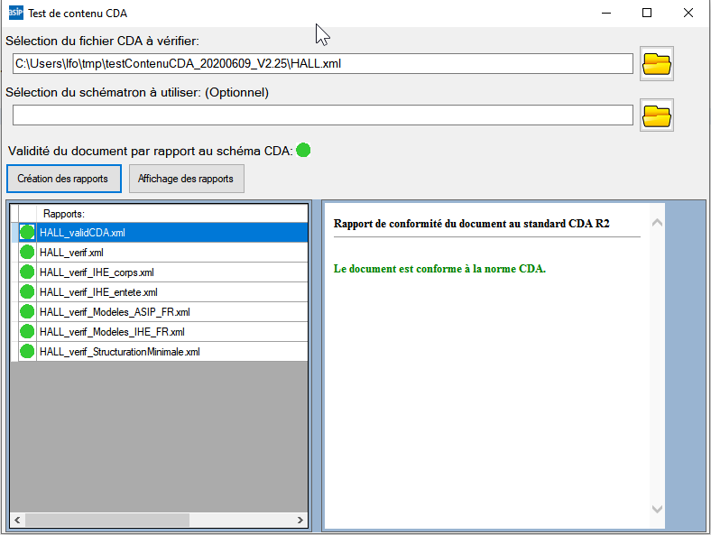

Utilisation du schematron
Afin de valider manuellement les CDA générés par la DevBox-Santé DMP il faut utiliser les outils de vérification fournit sur le site esante.gouv.fr : https://esante.gouv.fr/annexe-outil-de-verification-des-documents-cda
La version lors de la rédaction : https://esante.gouv.fr/sites/default/files/media_entity/documents/testContenuCDA_20200609_V2.25.zip
Une fois téléchargé, il faut sur un poste windows :
- décompresser l’archive.
- naviguer jusqu’à testContenuCDA_20200609_V2.25\schematrons\moteur\gui
- lancer l’exécution de TCC-GUI.exe
- copier le fichier cda à valider à la racine du testContenuCDA_20200609_V2.25
- cliquer sur générer le rapport :
